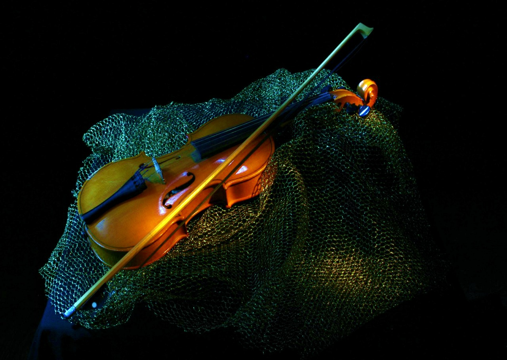

Read my blog
#1. I Love Playing Guitar
At the same time, I was also designing a new pickup. There were four that we experimented with and each was named after a Harley Davidson engine style. They were the Flathead, Knucklehead, Panhead and Evolution. The one I liked the most was the Evolution, so DiMarzio put them into production and they are still available
Books on musicians aren't the only ones you should read. Branch out and read on any and all artists that interest you: photographers, actors, painters, writers, athletes. Though the outlet of expression may be different, the creative spark is universal.
#2. I Love Playing Drums
I'm a pretty good drummer. I'm pretty good at guitar, bass and piano. I can play accordion; I'm not virtuoso. I've played cello before. My sister played it, and I know how to play it, but I'm not the best. Violin is kind of the same thing.
Writing songs is an essential part of my life: my mother teaches piano, and I have inherited my grandparents' passion for music, especially from my grandfather Tommy, who was a great drummer. It's no coincidence that I play the drums best, but I am also good with the guitar and the piano.
#3. I Love Playing Violin
I played the violin my whole life. I wanted to play from the time I was just a little kid, and I've always loved dance as well. I wanted to make people smile. I wanted to add an extra energy to my playing and make it visual and make it unique and fun.

When I get bored, or get stuck on an equation, I like to go ice skating, but it makes you forget your problem. Then you can tackle the problem with a fresh new insight. Einstein liked to play the violin to relax. Every physicist likes to have a past time. Mine is ice skating.

About Me
The guitarist,Drummer, Violinist always looks a bit clever because he's got so many strings and apparently knows what to do with them.